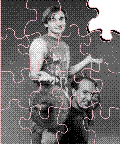

See if you can solve this programming puzzle, presented in the form of a dialog
between Konstantin Othmer (KON) and Bruce Leak (BAL). The dialog gives clues to
help you. Keep guessing until you're done; your score is the number to the left of the
clue that gave you the correct answer. These problems are supposed to be tough. If you
don't get a high score, at least you'll learn interesting Macintosh trivia.
100 BAL This guy has this program that leaves all the palette colors messed up after
his program quits.
KON Yeah, I've seen it. He's probably got version 1.0 of that KeithPaint program.
90 BAL This is something he wrote with MPW C, and he spent days debugging his code
with SADE. He's sure it's not his problem.
KON Sounds like some kind of Palette Manager nastiness.
80 BAL He sends you a copy and it works fine on your machine.
KON Which system is he running? How many monitors does he have?
75 BAL You're both running 6.0.7 on a Macintosh fx with one Apple 13-inch color
monitor.
KON That's a nice programming environment. Why doesn't he upgrade to System 7 and
buy himself a real monitor?
70 BAL Well, he has System 7 on a Macintosh Quadra with a 16-inch color monitor
for reading NetNews and watching QuickTime movies. But the bug doesn't happen on
that machine.
KON So it must be some INIT conflict. What's he got, ColorDesk or something?
65 BAL Nope, happens without any INITs.
KON He's using the Color Manager and calling some nasty thing like SaveEntries or
RestoreEntries, and he isn't MultiFinder compatible. I tell him to use the Palette
Manager.
60 BAL He's using the Palette Manager, and he's totally MultiFinder friendly.
KON Sounds impossible. I swap motherboards with him.
55 BAL Still happens, just on his machine. If you swapped hard drives it would happen
on yours.
KON It's got to be some kind of GDevice color table thing. I check the GDevice color
table before and after running his program.
BAL Wait a second. Who has which hard drive?
KON I have mine, he has his.
50 BAL The color tables are different on his GDevice, but the same on yours.
KON Well, who restores the color table? PaletteMgrExit or something like that, right?
45 BAL The Palette Manager changes the color environment only when a window with
an associated palette comes to the front. This method assumes that people who need
colors request them, and people who don't request colors don't care enough to affect the
color environment. Unfortunately, with this approach to color management, when an
application that's Palette Manager intensive quits, and an application such as the
Finder which has no intensive color demands comes to the front, you're stuck with the
nonstandard color state of the application that just quit. In 32-Bit QuickDraw David
Van Brink extended the Palette Manager to include a routine called PaletteMgrExit.
This routine is called automatically for you when your application quits, thus
restoring the default color state.
KON Don't you have the same problem when twitching between layers? If you twitch to
the Finder and the other application is still running, you'll be stuck with the
nonstandard color state too.
40 BAL Yeah, but there's still an application around that needs those colors, and you
can potentially see that application's documents, so it's a good bet to keep them. No one
is specifically asking for the standard colors, and someone wants the others, so why
not keep them around? If you twitch to another application that had palettes, obviously
its color needs will be satisfied.
KON So in effect you start out with a default color world, and you launch an application
that twists the colors to the demands of a particular document you're viewing or
editing. Upon quitting that application your machine is left in some nonstandard color
state. So PaletteMgrExit cleans up the mess.
35 BAL That's basically it, but just going back to the default color environment when
an application quits isn't sufficient. PaletteMgrExit reverts to the default color set
modified to accommodate the application coming to the front.
KON I set an ATB on PaletteMgrExit and see if it gets called.
30 BAL It's called on your machine, but not his.
KON Well, ExitToShell is supposed to call it, and it's hard to call ExitToShell wrong, so
there must be some system problem.
25 BAL Welcome to the Puzzle Page, KON. Maybe this would be an excellent
opportunity to fire up one of those many fine Macintosh debugging environments, Mr.
MacsBug.
KON Clearly _ExitToShell is different. So I list ExitToShell with MacsBug and see
who's there.
20 BAL It's in RAM.
KON I see whose heap it's in using HZ.
15 BAL It's above all heaps.
KON So it's in MultiFinder memory. He must be running an old version of MultiFinder
that doesn't know about PMgrExit.
10 BAL Yeah, you know that SetAside MultiFinder they still ship with SADE?
KON Version 6.1b9. Sounds like they never really finished it.
5 BAL Well, my hero Phil Goldman broke off the sources to add that SetAside stuff, but
it was never shipped as an official Apple release, since System 7 was just around the
corner. SADE needed that feature because they twitch in some weird way. So they're
sort of stuck using that version, while the rest of the world moves on. And they keep
shipping that old MultiFinder for those last two, die-hard, System 6 developers.
System 7 SADE users don't have this problem.
KON Nasty.
BAL Yeah.
KONSTANTIN OTHMER AND BRUCE LEAKBetween vacations, KON and BAL often
find themselves under a lot of pressure to catch up on their work load. When BAL gets
himself in too deep, he calls
KON in for assistance. They try to hash out their puzzling problems at Apple's Fitness
Center---although
KON admits to having trouble staying focused, due to what we can only call his
"wandering eye." When not working on Puzzle Pages and develop articles,
KON and
BAL actually write software. As a follow-on to their previous QuickDraw and
QuickTime successes, look for QuickFit, featuring QuickTime-based exercise videos
and QuickBuf protein powder. You read it here first! *
SCORING
Thanks to Sean Callahan, Scott Douglass, and David Van Brink for reviewing this
column.*